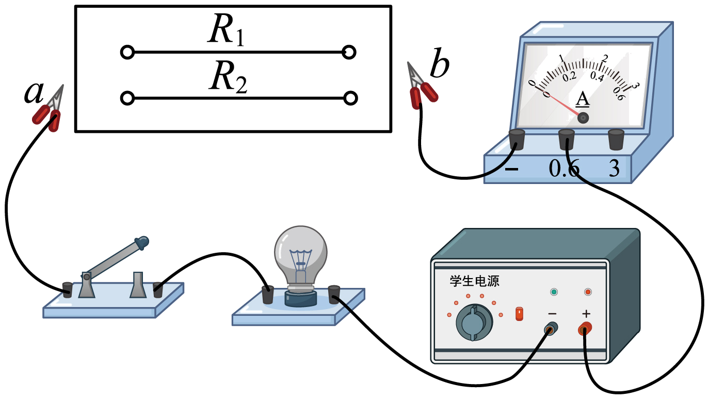
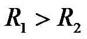
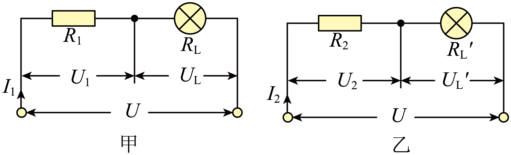
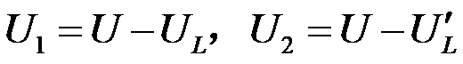
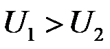
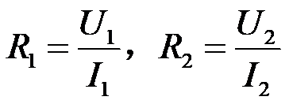

2023年北京中考物理 第25题 解析
25. 小京在复习时，用两端电压不变的电源及其他器材再次做了如图所示的实验。她将电阻丝R1、R2先后分别接入电路中的a、b两端，闭合开关后，观察到接入R2时，小灯泡的亮度更亮，电流表的示数更大。已知灯泡亮度变亮时，灯丝电阻变大。请分析并判断R1与R2阻值的大小关系。（可画电路图辅助说明）

【答案】

【解析】
【详解】R1、R2分别接入电路中，等效电路如图甲、乙所示：

电源电压U不变，电流I1<I2，灯丝电阻RL<RL'。依据欧姆定律UL=I1RL，UL'=I2RL'，可知UL<UL'。依据串联电路的电压关系，R1、R2两端电压分别

，可知
。依据公式
，可知。四、科普阅读题（共4分）